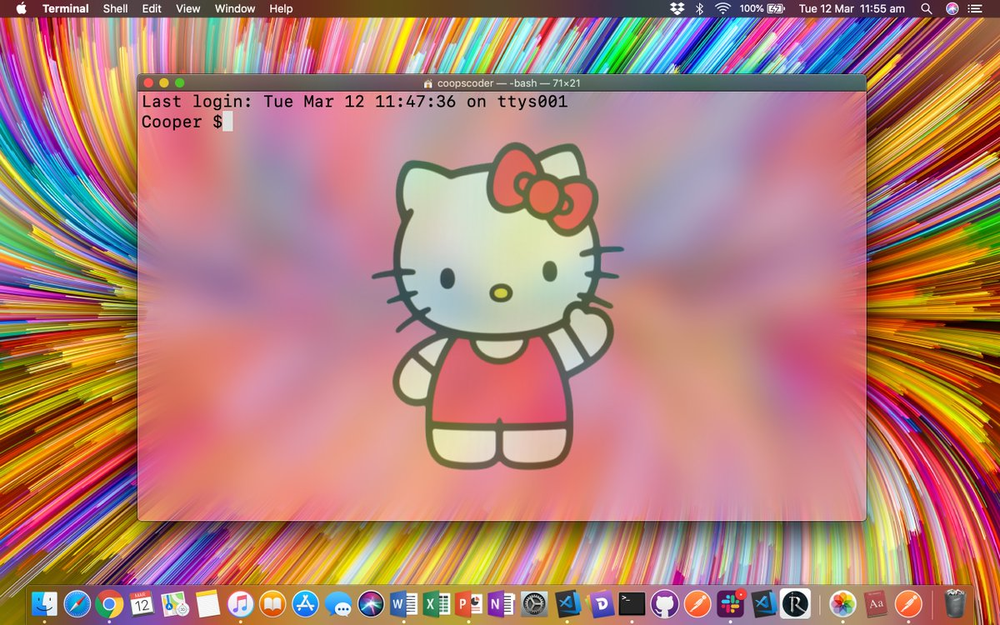

Orientation day!
Plenty of getting to know each other, some group exercises and a little beer at the end of the day.
If only every day would be this awesome!
Forever to be marked deep in my memory, after celebrating finishing the fortnight of intense Ruby work and excessive stress loads with a beer, then some more beers, followed by double burbons and sambuca, coupled with some personal stresses.
I melted down around midnight, shaving my hair off in the shower and passing out.
A lot can be said for making sure you pace yourself and get a good nights sleep.
Ruby started to ease up today as we have started doing a lot of revision, we got to submit ideas for the Terminal App and a partner (if we had one in mind), they are submitted in the evening and we find out in the morning if they're acceptable.
I went home unwell after hanging on all day feeling like the walking dead, so left it with the capable Tristan to submit our DatingApp idea.
Big day today, our idea was accepted.
We spent the morning on a Git revision, and while I am starting to understand the benefits of Git for version control the horribly counterintuitive nature of it drives me crazy.
Then after half a day of Git and Assignment guidlines we get to start working on it, while in retrospect I panicked a bit we ended up completing our basic application by 6pm.
We both decided that we just needed something functional to present and we achieved that by the end of the day.
Making the app look pretty sums up the day, we gradually decided to add things to the app, such as the ascii art and the chat feature at the end of the day.
Things I would work on next are the PowerPoint side of the presentation, we had time but didnt spend too much time on that.
Today Tristan and I presented our DatingApp.
Hilarity ensues, as is evident below.
Ruby Test, pretty sure I passed lol.
As we wrap up the 3 week stint of Ruby we started to touch on the following weeks learning of HTML and CSS with an introduction to UI and UX.
An example of Apple design can be found here, while we installed Figma to start planning for wireframes
Today is Labour Day, so lots of resting in Daylesford.
Today was the start of start of learning the origins of the internet and how it works (cute note: it was the internets 30th birthday)
Then we started HTML and CSS, hence I am starting this diary now and will backfill as much as I can.
I must decide on my next presentation topic, topic of my choosing that i can present for 5 mins.
P.S. while fucking around today I managed to gay up my computer terminal app, just a little.
To round out the day while trying to establish this blog in Git, we managed to delete the CSS file. So I was lucky enough to redo my sexy CSS style.
This morning on the train I settled on a topic for my presentation, I've always admired Shigeru Miyamoto and his design of Super Mario Bros.
In the hopes of tying in my presentation to design, I think this would be a great link given the parallel medium.
Intending to learn from my last presentation, I have some notes on my growth points.
Today I am also going to work on the floating button fixed at the bottom of the page, that will redirect back to the top.
Button success!
Three things I would like to attempt next.
Flexbox!
Now i know there's an easier way, lets see if I can transition my blog over to a flexbox without breaking it. hah! Using Flexbox I might like to put every part in it's own container so it can be stylised individually.
Flex success, quite painlessly actually I managed to transition the blog over without it breaking,as well as fixing the navbar so the text options are centered, and using transition to smooth the fading of the buttons in the nav.
Plan for future changes,
My attempt at building a form
Revision and preperation for building our portfolios. I am currenlty excited, lets wait till we see the rubrik first on Tuesday.
Today we got our Portfolio outlines, to be submitted on the following Monday. Glad I already have this blog happening.
Originally the plan was to make the page look like a periodic table, but through design it transitioned to a crossword page. After spending a few hours trying to get a background image of paper right it turned out an image of a stucco wall with a gradient filter over the top worked a treat.
Getting the landing page almost completed tomorrow will be all about the Lore (about) page, then i am a bit concerned about getting a mobile size display completed in time.
So lots of hacking away at my website, I now pretty much have decided that I hate it. The things i planned to do to make the page look interesting wont work, so now I have this totally ugly static page with a gross fade in.
It's obviously too late to redesign now but after submission it's comming offline till I can make something not gross that ill be able to sell myself and my skills on.
Still have to build my Bio and Projects page, Projects wont be so hard as there are only two to date including this site/blog. Bio is hard, deciding on an elevator pitch needs to be concise represent who you are, and dont know I am day from day hah!
In other news Sekiro gets released tomorrow but i'll have to spend the weekend doing my assignment.
Deep into coding, I finished the bulk of the heavy lifting by midday. Still loads of work to do on the fonts and colours etc.
But at this stage both desktop and mobile layouts have been fixed for all pages. Getting some feedback from friends and non-coders, pretty positive so far.
Unsure if the 5 second animation time on the main page is too long, will do some loading time testing over the weekend just bouncing between pages.
Really im just wasting time picking fonts till Sekiro gets delivered and I run off home to play it.
Finished the bulk of the coding for the Portfolio on friday, through more testing I found some responsiveness issues relating to text and have made the pages scale for Desktop, Mobile and now also tablet.
Today's task is finalising the colours, fonts followed by some final testing for each page.
Tomorrow's task will involve the written aspects of the project and checking off against the rubrik to ensure I havent missed anything.
I still need to fix that terrible orange shade in the hover for the menu button at the bottom of the blog page.
Didn't do a log for sunday, but I spent from 8am to 4pm completing the rubric and ensuring the project covers the assignment conditions. oh and building the presentation.
Back to Ruby revision, had enough fun with front end. Taking a little time for things to come back to me, but I am having success getting my programs to run so im glad it's not forgotten.
We have a speech by a Tech recruiter at 11:30 so I'm looking forward to that but im having a down day so I will go home after lunch and do my work from there.
Did a personal preso today, but mostly more Ruby revision.
line
Today I started working my own personal terminal app, this time it will be an RPG, it will be a single life effort with varying risk level. So far today I have just started planning and will get the Class structure built.
Today we did a Ruby revision test and started Databases and DBMS.
In more exciting news I got the basic battle system for my personal RPG project working. I've been researching more art to use to make it visual, and also music (but music may be difficult due to copyright reasons)
Did more today on on Databases and DBMS using Postico and Postgres, while it wasnt difficult and I completed the basics, I moved back onto my Terminal App RPG.
As we started learning the basics of MVC on Monday, I started planning migrating over my current Terminal App into an MVC platform, as that is a little more important than SQL.
It has been a challenge calling and updating hash data from the Model file using puts statements from the View file all from just the Controller file. But I feel like I'm close to cracking the MVC layout right now.
So I'm finally placing this here because I feel we've started moving into a rails structure today.
We spent most of the day setting up Sinatra and building the groundwork for request, response and servers, APIs and ERB.
It kind of feels today that the ability to build an actual website is coming together, like the puzzle pieces have been dumped on the table and the border frame has been completed and I can see what the picture might be.
We have next week off, this is the last week of semester 1. I totally intend to attend all holiday 'bonus' classes, continue to build my RPG app in the MVC framework as I actually build it up